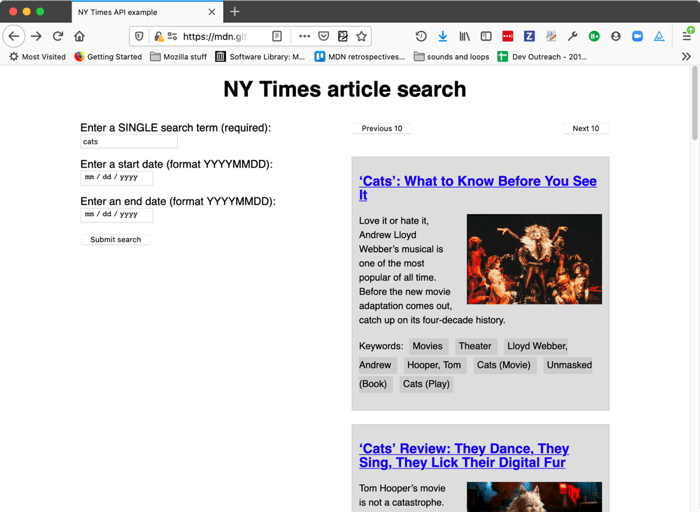
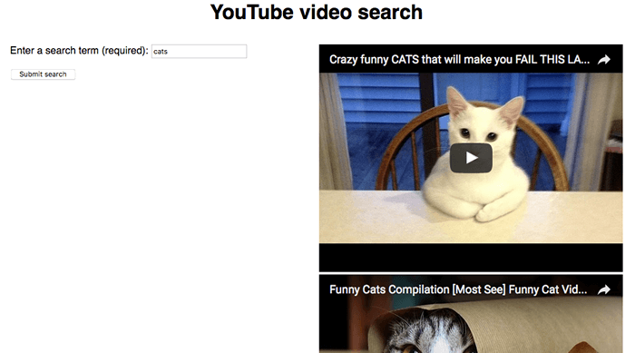

The APIs we've covered so far are built into the browser, but not all APIs are. Many large websites and services such as Google Maps, Twitter, Facebook, PayPal, etc. provide APIs allowing developers to make use of their data (e.g. displaying your twitter stream on your blog) or services (e.g. using Facebook login to log in your users). This article looks at the difference between browser APIs and 3rd party APIs and shows some typical uses of the latter.
| Prerequisites: | JavaScript basics (see first steps, building blocks, JavaScript objects), the basics of Client-side APIs |
|---|---|
| Objective: | To learn how third-party APIs work, and how to use them to enhance your websites. |
Third party APIs are APIs provided by third parties — generally companies such as Facebook, Twitter, or Google — to allow you to access their functionality via JavaScript and use it on your site. One of the most obvious examples is using mapping APIs to display custom maps on your pages.
Let's look at a Simple Mapquest API example, and use it to illustrate how third-party APIs differ from browser APIs.
Note: You might want to just get all our code examples at once, in which case you can then just search the repo for the example files you need in each section.
Browser APIs are built into the browser — you can access them from JavaScript immediately. For example, the Web Audio API we saw in the Introductory article is accessed using the native {{domxref("AudioContext")}} object. For example:
const audioCtx = new AudioContext();
...
const audioElement = document.querySelector('audio');
...
const audioSource = audioCtx.createMediaElementSource(audioElement);
// etc.
Third party APIs, on the other hand, are located on third party servers. To access them from JavaScript you first need to connect to the API functionality and make it available on your page. This typically involves first linking to a JavaScript library available on the server via a {{htmlelement("script")}} element, as seen in our Mapquest example:
<script src="https://api.mqcdn.com/sdk/mapquest-js/v1.3.2/mapquest.js"></script> <link type="text/css" rel="stylesheet" href="https://api.mqcdn.com/sdk/mapquest-js/v1.3.2/mapquest.css"/>
You can then start using the objects available in that library. For example:
let map = L.mapquest.map('map', {
center: [53.480759, -2.242631],
layers: L.mapquest.tileLayer('map'),
zoom: 12
});
Here we are creating a variable to store the map information in, then creating a new map using the mapquest.map() method, which takes as its parameters the ID of a {{htmlelement("div")}} element you want to display the map in ('map'), and an options object containing the details of the particular map we want to display. In this case we specify the coordinates of the center of the map, a map layer of type map to show (created using the mapquest.tileLayer() method), and the default zoom level.
This is all the information the Mapquest API needs to plot a simple map. The server you are connecting to handles all the complicated stuff, like displaying the correct map tiles for the area being shown, etc.
Note: Some APIs handle access to their functionality slightly differently, requiring the developer to make an HTTP request to a specific URL pattern to retrieve data. These are called RESTful APIs — we'll show an example later on.
Security for browser APIs tends to be handled by permission prompts, as discussed in our first article. The purpose of these is so that the user knows what is going on in the websites they visit and is less likely to fall victim to someone using an API in a malicious way.
Third party APIs have a slightly different permissions system — they tend to use developer keys to allow developers access to the API functionality, which is more to protect the API vendor than the user.
You'll find a line similar to the following in the Mapquest API example:
L.mapquest.key = 'YOUR-API-KEY-HERE';
This line specifies an API or developer key to use in your application — the developer of the application must apply to get a key, and then include it in their code to be allowed access to the API's functionality. In our example we've just provided a placeholder.
Note: When creating your own examples, you'll use your own API key in place of any placeholder.
Other APIs may require that you include the key in a slightly different way, but the pattern is relatively similar for most of them.
Requiring a key enables the API provider to hold users of the API accountable for their actions. When the developer has registered for a key, they are then known to the API provider, and action can be taken if they start to do anything malicious with the API (such as tracking people's location or trying to spam the API with loads of requests to stop it working, for example). The easiest action would be to just revoke their API privileges.
Let's add some more functionality to the Mapquest example to show how to use some other features of the API.
To start this section, make yourself a copy of the mapquest starter file, in a new directory. If you've already cloned the examples repository, you'll already have a copy of this file, which you can find in the javascript/apis/third-party-apis/mapquest directory.
Next, you need to go to the Mapquest developer site, create an account, and then create a developer key to use with your example. (At the time of writing, it was called a "consumer key" on the site, and the key creation process also asked for an optional "callback URL". You don't need to fill in a URL here: just leave it blank.)
There are a number of different types of map that can be shown with the Mapquest API. To do this, find the following line:
layers: L.mapquest.tileLayer('map')
Try changing 'map' to 'hybrid' to show a hybrid-style map. Try some other values too. The tileLayer reference page shows the different available options, plus a lot more information.
The map has a number of different controls available; by default it just shows a zoom control. You can expand the controls available using the map.addControl() method; add this to your code, inside the window.onload handler:
map.addControl(L.mapquest.control());
The mapquest.control() method just creates a simple full-featured control set, and it is placed in the top-right hand corner by default. You can adjust the position by specifying an options object as a parameter for the control containing a position property, the value of which is a string specifying a position for the control. Try this, for example:
map.addControl(L.mapquest.control({ position: 'bottomright' }));
There are other types of control available, for example mapquest.searchControl() and mapquest.satelliteControl(), and some are quite complex and powerful. Have a play around and see what you can come up with.
Adding a marker (icon) at a certain point on the map is easy — you just use the L.marker() method (which seems to be documented in the related Leaflet.js docs). Add the following code to your example, again inside window.onload:
L.marker([53.480759, -2.242631], {
icon: L.mapquest.icons.marker({
primaryColor: '#22407F',
secondaryColor: '#3B5998',
shadow: true,
size: 'md',
symbol: 'A'
})
})
.bindPopup('This is Manchester!')
.addTo(map);
As you can see, this at its simplest takes two parameters, an array containing the coordinates at which to display the marker, and an options object containing an icon property that defines the icon to display at that point.
The icon is defined using an mapquest.icons.marker() method, which as you can see contains information such as color and size of marker.
Onto the end of the first method call we chain .bindPopup('This is Manchester!'), which defines content to display when the marker is clicked.
Finally, we chain .addTo(map) to the end of the chain to actually add the marker to the map.
Have a play with the other options shown in the documentation and see what you can come up with! Mapquest provides some pretty advanced functionality, such as directions, searching, etc.
Note: If you have trouble getting the example to work, check your code against our finished version — see expanded-example.html (also see it running live here).
Google Maps is arguably the most popular maps API, so why didn't we use it for our maps example? We did create an example to show how to use it, but in the end we went with Mapquest for a couple of reasons:
Now let's look at another API example — the New York Times API. This API allows you to retrieve New York Times news story information and display it on your site. This type of API is known as a RESTful API — instead of getting data using the features of a JavaScript library like we did with Mapquest, we get data by making HTTP requests to specific URLs, with data like search terms and other properties encoded in the URL (often as URL parameters). This is a common pattern you'll encounter with APIs.
Below we'll take you through an exercise to show you how to use the NYTimes API, which also provides a more general set of steps to follow that you can use as an approach for working with new APIs.
When you want to use a third party API, it is essential to find out where the documentation is, so you can find out what features the API has, how you use them, etc. The New York Times API documentation is at https://developer.nytimes.com/.
Most APIs require you to use some kind of developer key, for reasons of security and accountability. To sign up for an NYTimes API key, following the instructions at https://developer.nytimes.com/get-started.
Let's request a key for the Article Search API — create a new app, selecting this as the API you want to use (fill in a name and description, toggle the switch under the "Article Search API" to the on position, and then click "Create").
Get the API key from the resulting page.
Now, to start the example off, make copies of nytimes_start.html and nytimes.css in a new directory on your computer. If you've already cloned the examples repository, you'll already have a copy of these files, which you can find in the javascript/apis/third-party-apis/nytimes directory. Initially the <script> element contains a number of variables needed for the setup of the example; below we'll fill in the required functionality.
The app will end up allowing you to type in a search term and optional start and end dates, which it will then use to query the Article Search API and display the search results.

First, you'll need to make a connection between the API and your app. In the case of this API, you need to include the API key as a get parameter every time you request data from the service at the correct URL.
Find the following line:
let key = ' ... ';
Replace the existing API key with the actual API key you got in the previous section.
Add the following line to your JavaScript, below the "// Event listeners to control the functionality" comment. This runs a function called submitSearch() when the form is submitted (the button is pressed).
searchForm.addEventListener('submit', submitSearch);
Now add the submitSearch() and fetchResults() function definitions, below the previous line:
function submitSearch(e) {
pageNumber = 0;
fetchResults(e);
}
function fetchResults(e) {
// Use preventDefault() to stop the form submitting
e.preventDefault();
// Assemble the full URL
url = baseURL + '?api-key=' + key + '&page=' + pageNumber + '&q=' + searchTerm.value + '&fq=document_type:("article")';
if(startDate.value !== '') {
url += '&begin_date=' + startDate.value;
};
if(endDate.value !== '') {
url += '&end_date=' + endDate.value;
};
}
submitSearch() sets the page number back to 0 to begin with, then calls fetchResults(). This first calls preventDefault() on the event object, to stop the form actually submitting (which would break the example). Next, we use some string manipulation to assemble the full URL that we will make the request to. We start off by assembling the parts we deem as mandatory for this demo:
baseURL variable).api-key URL parameter (the value is taken from the key variable).page URL parameter (the value is taken from the pageNumber variable).q URL parameter (the value is taken from the value of the searchTerm text {{htmlelement("input")}}).fq URL parameter. In this case, we want to return articles.Next, we use a couple of if() statements to check whether the startDate and endDate <input>s have had values filled in on them. If they do, we append their values to the URL, specified in begin_date and end_date URL parameters respectively.
So, a complete URL would end up looking something like this:
https://api.nytimes.com/svc/search/v2/articlesearch.json?api-key=YOUR-API-KEY-HERE&page=0&q=cats
&fq=document_type:("article")&begin_date=20170301&end_date=20170312
Note: You can find more details of what URL parameters can be included at the NYTimes developer docs.
Note: The example has rudimentary form data validation — the search term field has to be filled in before the form can be submitted (achieved using the required attribute), and the date fields have pattern attributes specified, which means they won't submit unless their values consist of 8 numbers (pattern="[0-9]{8}"). See Form data validation for more details on how these work.
Now we've constructed our URL, let's make a request to it. We'll do this using the Fetch API.
Add the following code block inside the fetchResults() function, just above the closing curly brace:
// Use fetch() to make the request to the API
fetch(url).then(function(result) {
return result.json();
}).then(function(json) {
displayResults(json);
});
Here we run the request by passing our url variable to fetch(), convert the response body to JSON using the json() function, then pass the resulting JSON to the displayResults() function so the data can be displayed in our UI.
OK, let's look at how we'll display the data. Add the following function below your fetchResults() function.
function displayResults(json) {
while (section.firstChild) {
section.removeChild(section.firstChild);
}
const articles = json.response.docs;
if(articles.length === 10) {
nav.style.display = 'block';
} else {
nav.style.display = 'none';
}
if(articles.length === 0) {
const para = document.createElement('p');
para.textContent = 'No results returned.'
section.appendChild(para);
} else {
for(var i = 0; i < articles.length; i++) {
const article = document.createElement('article');
const heading = document.createElement('h2');
const link = document.createElement('a');
const img = document.createElement('img');
const para1 = document.createElement('p');
const para2 = document.createElement('p');
const clearfix = document.createElement('div');
let current = articles[i];
console.log(current);
link.href = current.web_url;
link.textContent = current.headline.main;
para1.textContent = current.snippet;
para2.textContent = 'Keywords: ';
for(let j = 0; j < current.keywords.length; j++) {
const span = document.createElement('span');
span.textContent += current.keywords[j].value + ' ';
para2.appendChild(span);
}
if(current.multimedia.length > 0) {
img.src = 'http://www.nytimes.com/' + current.multimedia[0].url;
img.alt = current.headline.main;
}
clearfix.setAttribute('class','clearfix');
article.appendChild(heading);
heading.appendChild(link);
article.appendChild(img);
article.appendChild(para1);
article.appendChild(para2);
article.appendChild(clearfix);
section.appendChild(article);
}
}
}
There's a lot of code here; let's explain it step by step:
while loop is a common pattern used to delete all of the contents of a DOM element, in this case, the {{htmlelement("section")}} element. We keep checking to see if the <section> has a first child, and if it does, we remove the first child. The loop ends when <section> no longer has any children.articles variable to equal json.response.docs — this is the array holding all the objects that represent the articles returned by the search. This is done purely to make the following code a bit simpler.if() block checks to see if 10 articles are returned (the API returns up to 10 articles at a time.) If so, we display the {{htmlelement("nav")}} that contains the Previous 10/Next 10 pagination buttons. If less than 10 articles are returned, they will all fit on one page, so we don't need to show the pagination buttons. We will wire up the pagination functionality in the next section.if() block checks to see if no articles are returned. If so, we don't try to display any — we create a {{htmlelement("p")}} containing the text "No results returned." and insert it into the.<section>for(var j = 0; j < current.keywords.length; j++) { ... } ) to loop through all the keywords associated with each article, and insert each one inside its own {{htmlelement("span")}}, inside a <p>. This was done to make it easy to style each one.if() block (if(current.multimedia.length > 0) { ... }) to check whether each article has any images associated with it (some stories don't.) We display the first image only if it exists (otherwise an error would be thrown).<div> element a class of "clearfix", so we can easily apply clearing to it.To make the pagination buttons work, we will increment (or decrement) the value of the pageNumber variable, and then re-rerun the fetch request with the new value included in the page URL parameter. This works because the NYTimes API only returns 10 results at a time — if more than 10 results are available, it will return the first 10 (0-9) if the page URL parameter is set to 0 (or not included at all — 0 is the default value), the next 10 (10-19) if it is set to 1, and so on.
This allows us to write a simplistic pagination function easily.
Below the existing addEventListener() call, add these two new ones, which cause the nextPage() and previousPage() functions to be invoked when the relevant buttons are clicked:
nextBtn.addEventListener('click', nextPage);
previousBtn.addEventListener('click', previousPage);
Below your previous addition, let's define the two functions — add this code now:
function nextPage(e) {
pageNumber++;
fetchResults(e);
};
function previousPage(e) {
if(pageNumber > 0) {
pageNumber--;
} else {
return;
}
fetchResults(e);
};
The first function is simple — we increment the pageNumber variable, then run the fetchResults() function again to display the next page's results.
The second function works nearly exactly the same way in reverse, but we also have to take the extra step of checking that pageNumber is not already zero before decrementing it — if the fetch request runs with a minus page URL parameter, it could cause errors. If the pageNumber is already 0, we return out of the function, to avoid wasting processing power (If we are already at the first page, we don't need to load the same results again).
Note: You can find our finished nytimes API example code on GitHub (also see it running live here).
We also built another example for you to study and learn from — see our YouTube video search example. This uses two related APIs:
This example is interesting because it shows two related third-party APIs being used together to build an app. The first one is a RESTful API, while the second one works more like Mapquest (with API-specific methods, etc.). It is worth noting however that both of the APIs require a JavaScript library to be applied to the page. The RESTful API has functions available to handle making the HTTP requests and returning the results.

We are not going to say too much more about this example in the article — the source code has detailed comments inserted inside it to explain how it works.
To get it running, you'll need to:
ENTER-API-KEY-HERE in the source code, and replace it with your API key.file:// URL).This article has given you a useful introduction to using third-party APIs to add functionality to your websites.
{{PreviousMenuNext("Learn/JavaScript/Client-side_web_APIs/Fetching_data", "Learn/JavaScript/Client-side_web_APIs/Drawing_graphics", "Learn/JavaScript/Client-side_web_APIs")}}